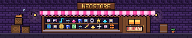
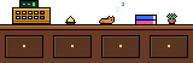

Ta page d'accueil
Tes sites en tuiles, des widgets et ton agenda, devant un décor animé tiré au hasard à chaque lancement.
Pour Windows 10 et 11 · gratuit
NeoDex réunit ta page d'accueil, un navigateur protégé et une boutique de 150 applis et jeux.
Télécharge NeoDex-Setup.exe avec le bouton ci-dessous.
Lance-le. Si Windows affiche un avertissement, clique sur « Informations complémentaires », puis « Exécuter quand même ».
Choisis un décor, ajoute tes sites, et va faire un tour dans NeoStore.
Le décor derrière cette page est un vrai décor de NeoDex. Change-le.
Tes sites en tuiles, des widgets et ton agenda, devant un décor animé tiré au hasard à chaque lancement.
Des onglets, l'écran partagé pour deux pages côte à côte, les téléchargements et les extensions Chrome.
Une vidéo continue dans un coin de l'écran pendant que tu fais autre chose.
Une colonne à gauche, comme dans Opera GX : tes applis et tes sites en un clic, et les chaînes Twitch en direct.
Une seule boîte pour trouver un onglet, un site, une appli ou un réglage, même depuis une page web.
Une page entière traduite dans ta langue en un clic, sans quitter le site.
Les publicités disparaissent, YouTube compris, et le VPN s'allume en un clic.
Ils restent chiffrés sur ton PC, NeoDex propose de les retenir et les remplit tout seul.
Tes fichiers chiffrés sur ton PC, avec un mot de passe que NeoDex ne garde jamais.
Une fenêtre à part qui ne garde ni historique ni connexion une fois fermée.
Ce qui protège ton PC, ce que chaque site et chaque appli a le droit de faire, et les fichiers mis en quarantaine.
Chaque appli de NeoStore est vérifiée et signée avant d'arriver chez toi. Une archive modifiée est refusée.
Plus de 150 applis et jeux à installer en un clic : musique, jeux, bureautique, outils, compagnon.
Un explorateur de fichiers, le volume de chaque programme, des notes et le partage d'écran pour Discord ou Meet.
Ton temps passé sur chaque site et chaque appli, jour par jour, avec tes records dans les jeux.
Change toutes les couleurs, les polices et le curseur en pixels, et partage tes thèmes.
Tuiles, réglages et données suivent sur tous tes PC par OneDrive, Google Drive ou Dropbox.
L'appli Android retrouve tes raccourcis et ta musique, et NeoDex se met à jour tout seul sur ton PC.


Chaque lancement de NeoDex tire un nouveau décor, dessiné en pixels avec ses étoiles qui scintillent et ses étoiles filantes. En voici quelques-uns : clique pour les essayer derrière cette page.
Les dernières versions de NeoDex. Il se met à jour tout seul : un bandeau te le propose dès qu'une version sort.
Chargement…
Oui. NeoDex et toutes les applis de NeoStore sont gratuits, sans publicité.
Sur ton PC, dans le dossier %APPDATA%\NeoDex. Elles n'en sortent que si tu actives la synchro : elles passent alors par ton propre OneDrive, Google Drive ou Dropbox, chiffrées avec ton mot de passe. Chaque appli ne voit que ce que ses autorisations lui permettent.
Dans Windows : Paramètres › Applications › Applications installées › NeoDex › Désinstaller. Tes données restent dans %APPDATA%\NeoDex au cas où tu reviendrais ; supprime ce dossier pour tout effacer.
NeoDex est fait pour Windows 10 et 11. Une version Linux est en préparation : elle se construit et passe ses tests à chaque version, mais n'est pas encore proposée au téléchargement. Pas de version Mac. Une appli Android accompagne NeoDex pour retrouver tes raccourcis et ta musique. Dans NeoStore, chaque appli indique les systèmes où elle marche.
L'installateur n'a pas de certificat payant de Microsoft, alors Windows prévient par précaution. Clique sur « Informations complémentaires », puis « Exécuter quand même ». Les mises à jour, elles, sont signées et vérifiées par NeoDex avant d'être installées.
Les applis du catalogue officiel sont examinées puis signées : NeoDex refuse une archive modifiée. Une appli non vérifiée reste installable, mais NeoStore te prévient avant. Chaque appli dit ce qu'elle peut faire, et tu peux retirer une autorisation à tout moment.
Toutes seules : NeoDex vérifie s'il existe une nouvelle version et te propose de l'installer en un clic. Les applis de NeoStore se mettent à jour de la même façon.
Tout ce que NeoStore propose est un plugin : un dépôt GitHub que NeoDex sait trouver, télécharger et installer. Tu peux faire le tien.
Le Studio de plugins, dans NeoStore, crée de petites applis à partir de onze modèles : fiches de révision, routine du jour, quiz, compteurs, habitudes… Tu peux les partager par un code.
Un plugin, c'est un plugin.json, un index.js et une icône. NeoDex lui donne un contexte ctx : sa vue, ses données sauvegardées et synchronisées, et seulement les autorisations qu'il demande.
Crée un dépôt GitHub public et ajoute-lui le sujet neodex-plugin : c'est ainsi que NeoStore le trouve.
Mets à la racine plugin.json (identité, version, autorisations et compatibility : les systèmes où il marche), index.js, icon.png en pixel art de préférence, locales/en.json pour la version anglaise, et un README en français et en anglais.
Publie une Release GitHub avec l'archive <id>-<version>.zip : c'est le fichier que NeoStore télécharge.
Pour entrer au catalogue officiel, fais approuver ton plugin : il reçoit une attestation signée. Sans elle, il reste installable mais marqué « non vérifié ».
export default async function (ctx) {
ctx.view.textContent = 'Bonjour !';
const notes = (await ctx.folder.read('notes')) || {};
}